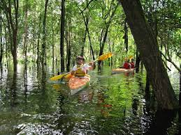
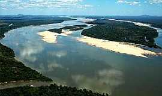

 
Onde se localiza a Ilha do Bananal?
Estado do Tocantins
A Ilha do Bananal está situada entre os estados de Tocantins e Mato Grosso, cabendo sua jurisdição ao Estado do Tocantins,
com uma área de aproximadamente 2 milhões de hectares sendo considerada a maior ilha fluvial do mundo e com uma rica biodiversidade.
O que tem na Ilha do Bananal?
Ilha do Bananal
Um dos grandes atrativos para turistas de todo Brasil é a emoção da pesca esportiva, podendo-se fisgar grandes exemplares de pirararas,
pirarucus, surubins, caranhas, entre outros. Compõem a região, os municípios de Formoso do Araguaia, Gurupi, Lagoa da Confusão e Peixe.